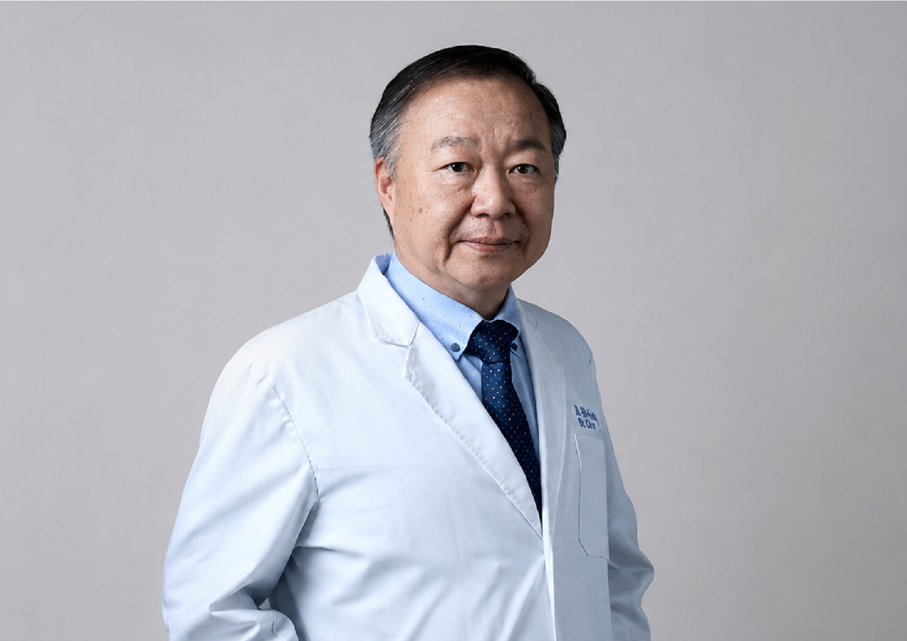

牙科醫療聯盟體系
整合植牙、贗復、牙周、牙髓與家庭牙科，針對缺牙、咬合不適與長期牙周問題提供完整評估。
提供最佳治療方案牙科體系，8間以上聯合牙科，旗下近 20位牙醫師，近 50位牙科護理與假牙技術人員，還有斥資千萬打造牙體技術研發中心，服務範圍遍及台北市、新北市、桃園市、新竹縣、苗栗縣、台中市、彰化市、台南市、高雄市，提供完善牙科治療服務。
以數位影像、口內掃描與跨科醫師討論為基礎，協助患者理解自身口腔狀況，選擇合適且可長期維護的治療方案。

整合植牙、贗復、牙周、牙髓與家庭牙科，針對缺牙、咬合不適與長期牙周問題提供完整評估。
透過口內掃描、數位設計與精密製作流程，讓牙冠與假牙更貼合口腔條件，兼顧美觀與耐用。
從術前疑問、療程安排到術後照護，提供清楚的聯繫窗口，減少患者在治療過程中的不確定感。
素雅不是冷淡，而是讓資訊清楚、流程安心、選擇透明。
以影像與醫師說明協助患者了解口腔狀況，療程與費用清楚列出，避免模糊報價。
依照個案條件安排合適醫師與療程順序，讓植牙、補骨、牙周與假牙製作能彼此銜接。
針對單顆植牙、局部缺牙與全口重建，提供分階段治療與付款規劃，降低一次性負擔。
從單一院所到跨區服務，逐步導入數位設備、全口重建流程與牙體製作整合。
成立牙醫團隊，開始提供植牙、家庭牙科與重建相關治療服務。
建立客服與追蹤制度，協助患者完成術前諮詢與術後關懷。
導入口內掃描與數位化假牙製作流程，提升療程溝通與製作精準度。
推動數位導引治療與材料整合，持續改善植牙與全口重建體驗。
多區院所提供初診評估與療程安排，方便患者就近諮詢。

醫院牙科部合作環境，適合複雜重建評估。
預約評估
植牙、全口重建與家庭牙科服務。
交通便利
提供數位檢查、植牙諮詢與牙周治療。
數位檢查
南部患者可就近安排植牙與重建評估。
南部服務依照治療需求，由不同專長醫師共同提供診療建議。

專長：All-on-4、固定式假牙、咬合重建。

專長：微創植牙、補骨、數位假牙設計。

專長：牙周治療、美容牙科、全瓷贗復。

專長：顯微根管、活髓保存、根尖手術。
用清楚的方式理解療程、費用與術後照護，讓看牙不再充滿未知。
留下您的牙齒狀況與方便聯繫時間，專人將協助安排初步諮詢。
可先透過電話或線上表單描述目前困擾，例如缺牙位置、假牙不穩、牙周問題或想了解全口重建。
04 23261 777服務時間：週一至週六 09:00 - 18:00